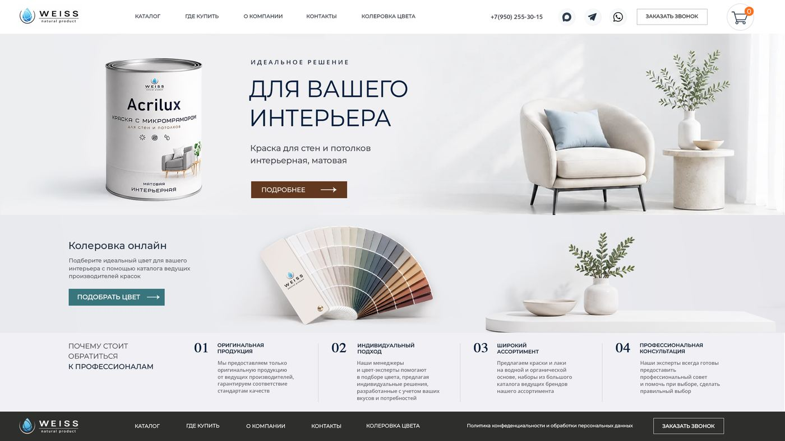

Макеты и вёрстка
25 экранов: под каждым макетом — кнопка «открыть вёрстку» этой же страницы. Сверяйте 1 к 1, кликая по кнопке. Картинки макетов — из исходных PSD (сжаты до 1400px по ширине).
Основные страницы

Колеровка и палитры


Корзина и заказ


М24 «Оплата» — единственный экран без собственного макета. В исходниках лежит файл «Заменяется безопасным сценарием оплаты» — это старая модалка с полем номера карты. По ТЗ п.8.3 такой сценарий запрещён (карту вводить нельзя), поэтому страница свёрстана по тексту ТЗ: выбор способа оплаты + уведомление о безопасной оплате. Если нужен макет именно этого экрана — его надо запросить у дизайнера.
Информационные страницы


Модальные окна


М18 «Четыре интерьерные сцены» — отдельного экрана нет: это набор изображений для
визуализатора (assets/img/viz-hero.png + viz-thumb1…3.png), они видны на странице М09.
Масштаб: макеты нарисованы под 2560 px. Чтобы сравнение было честным, откройте вёрстку
на мониторе 2560 px или уменьшите масштаб браузера так, чтобы ширина страницы совпала
с шириной картинки макета.